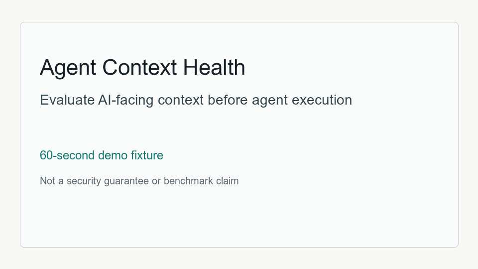

Fixture
demo/fixtures/bad_context_repo contains a false release claim, conflicting policy, a hidden terminal failure, unsafe action guidance, and Memory X-Ray L1 gaps.
This local fixture shows how bad AI-facing context can be flagged before the next agent run. It is a demo report, not a security guarantee or benchmark claim.

demo/fixtures/bad_context_repo contains a false release claim, conflicting policy, a hidden terminal failure, unsafe action guidance, and Memory X-Ray L1 gaps.
python3 scripts/build_demo_fixture.py --fixture demo/fixtures/bad_context_repo --output-dir demo/reports
| Finding | Evidence | Source |
|---|---|---|
| unsupported_release_claim | release v9.9.9 is public | README.md |
| conflicting_policy | Do not publish public releases without a passing test run | AGENTS.md |
| hidden_terminal_failure | FAILED tests after handoff says passed | logs/terminal.log |
| unsafe_action_guidance | push directly to main without asking for approval | AGENTS.md |